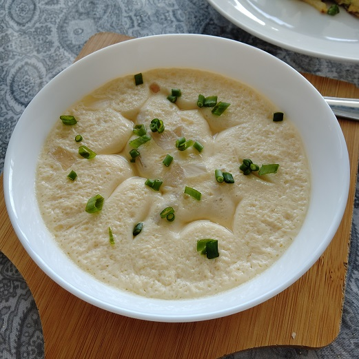

แบบฝีกหัด 2:Basic HTML
รหัสนักศึกษา 6440011005 กิตติภณ วิทยพันธ์
ไข่ตุ๋น เนื้อเด้งๆ

ส่วนผสม ไข่ตุ๋น
ไข่ไก่ 4 ฟอง
น้ำ 400 มิลลิลิตร (ml.)
ซีอิ๊วขาว 2 ช้อนโต๊ะ
แครอท
ต้นหอม
วิธีทำ ไข่ตุ๋น
ตอกไข่ใส่แก้ว แล้วใช้หนังยางรัดรอบแก้วให้เท่าขอบของไข่
เทไข่ใส่ชามผสม ตวงน้ำเปล่า หรือน้ำซุปที่เตรียมไว้ ใส่แก้วที่รักหนังยางให้ได้ระดับเดียวกับไข่ ใช้เป็นน้ำ 2 เท่าของไข่
ปรุงรสในอัตราส่วน ซีอิ๊ว 1 ช้อนโต๊ะ ต่อไข่ 2 ฟอง แล้วคนให้ส่วนผสมเข้ากันดี
เทไข่ใส่ชามที่จะใช้นึ่ง โดยนำกระชอนมากรองไข่ เพื่อให้เนื้อเนียน และไม่มีเศษไข่ขาว
ใส่แครอทและต้นหอมซอยลงไป ระหว่างนี้ให้ตั้งน้ำให้เดือดได้ที่
พอน้ำเดือดจัดให้เบาไปลงเหลือไฟวงเล็ก (เบาสุด) ก่อนนำไข่ตุ๋นใส่ลงไปให้เปิดฝาหม้อนึ่งออกก่อน ประมาณ 5 วินาที เพื่อไล่เอาคามร้อนออก จากนั้นใส่ชามไข่ตุ๋นลงไปแล้วปิดฝา ตั้งเวลาประมาณ 15-20 นาที
คุณค่าทางโภชนาการ ไข่ตุ๋น
รายละเอียด
คุณค่าทางโภชนาการที่ได้รับ
พลังงานทั้งหมด
72
ไขมันทั้งหมด
8%
ไขมันอิ่มตัว
8%
ไขมันไม่อิ่มตัวเชิงซ้อน
ไขมันไม่อิ่มตัวเชิงเดี่ยว
ไขมันทราน
คลอเรสเตอรอล
62%
โซเดียม
3%
โพแทสเซียม
2%
คาร์โบไฮเดรต
1%
โปรตีน
13%
Home